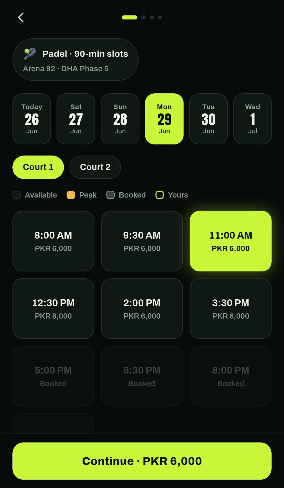
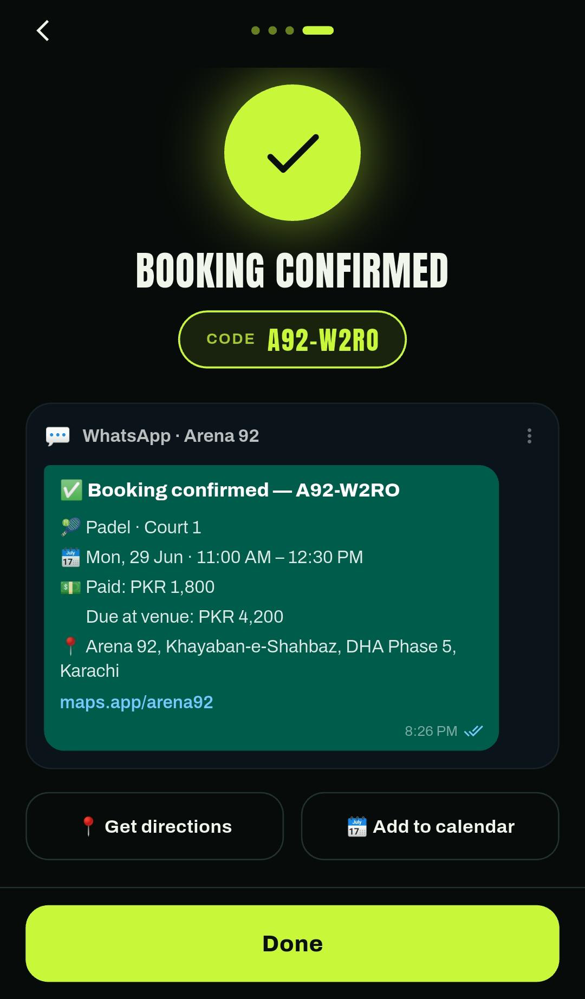

01 — Consumer marketplace
CourtAo
A white-label sports-arena booking marketplace.
Discover and book indoor courts — Padel, Futsal, Cricket, Table Tennis and 5-a-side football — across multiple arenas and locations. Browse anonymously, then book with a phone + OTP login. Bookings persist fully offline, with per-location pricing, peak-hour rates and a 30% advance-payment flow.
- Anonymous discovery
- Phone + OTP auth
- Offline persistence
- White-label theming
- Multi-arena pricing
- 39 automated tests
FlutterDart 3Riverpod v3go_routershared_preferencesflutter_animate